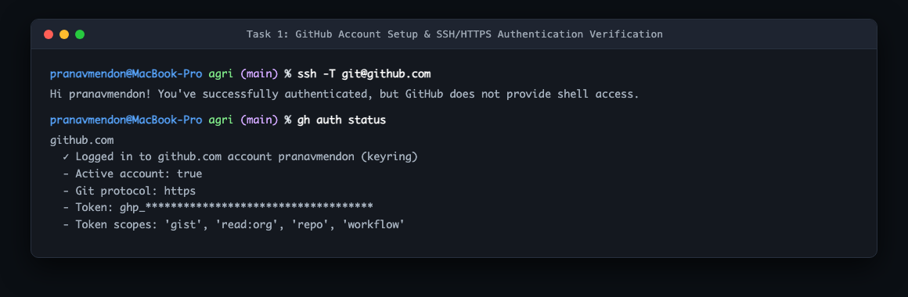
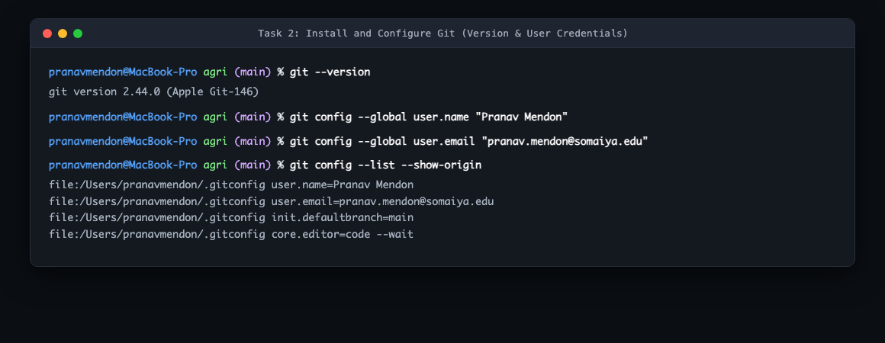
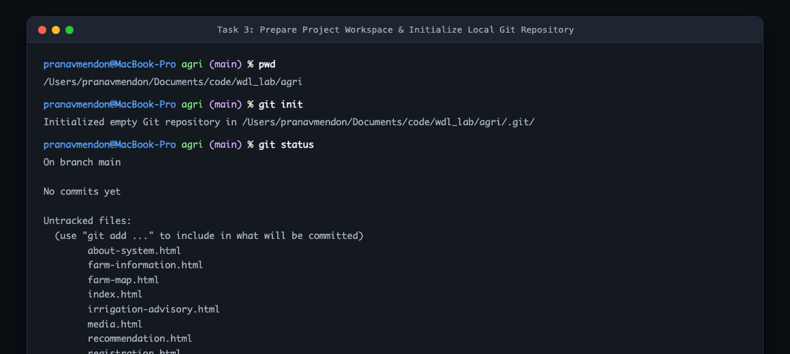
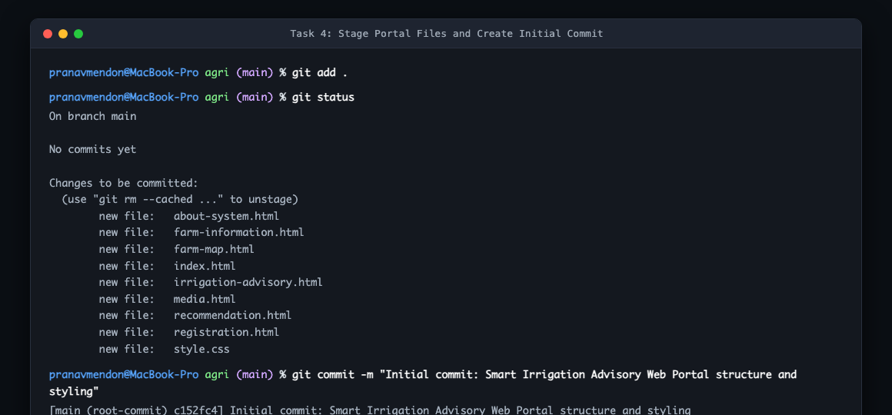
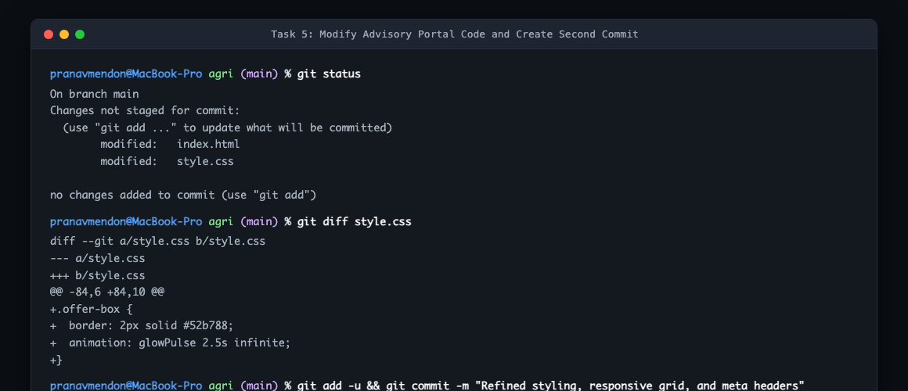
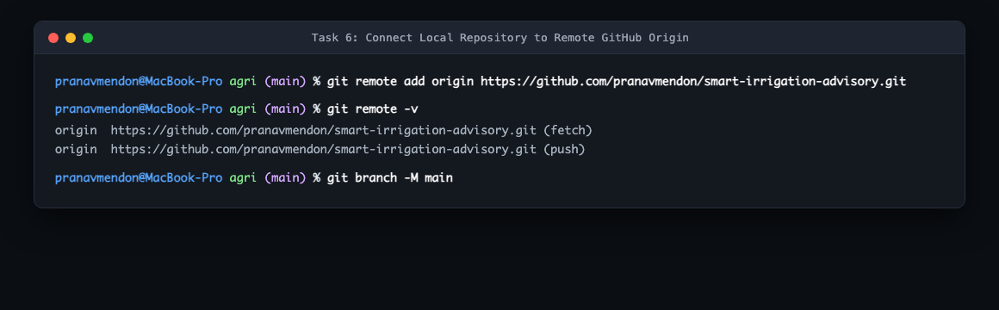
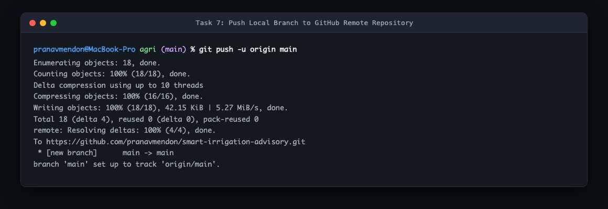
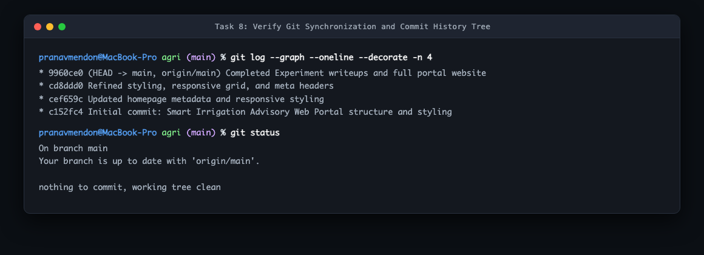

| Exp. No: | 3 | Roll No: | 16010125138 |
| Name: | Pranav Mendon | Batch: | B3 |
| Branch: | Computer Engineering | Semester: | IV |
| Subject: | Web Development Lab | Date of Perf: | 05 / 08 / 2026 |
2. To stage files, record descriptive commits, and track repository history.
3. To link the local repository to GitHub, push changes, and manage remote tracking.
4. To understand repository cloning, branch management, and collaborative synchronization.
Expected Output / Screenshots (Task-Wise):








1. What is the purpose of git clone? How is it different from downloading a ZIP file from GitHub?
• git clone downloads the files along with the hidden .git repository directory, preserving full commit history, all branches, tags, and automatically configures the origin remote tracking link so developers can push and pull.
• Downloading a ZIP extracts only the current state of files with no history, no branches, and no tracking connection to GitHub.
The experiment provided hands-on mastery over distributed version control workflows using Git and GitHub. Understanding the relationship between the working directory, index, and commit history clarified how software teams safely collaborate, track feature changes, and synchronize distributed repositories.